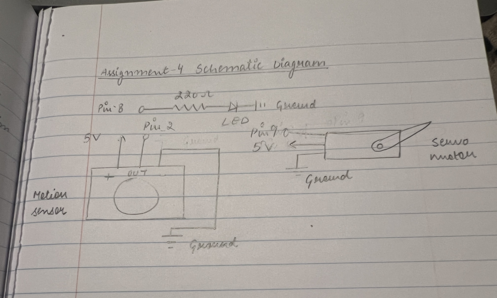
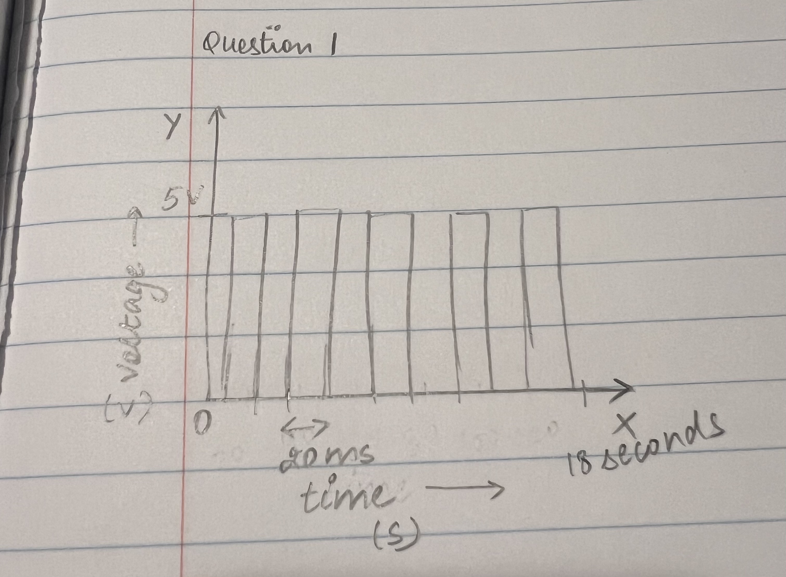

Arduino code:
const int trigPin = 3;
const int echoPin = 2;
const int fanPin = 5; // PWM pin to MOSFET gate
const float threshold = 50; // cm
void setup() {
pinMode(trigPin, OUTPUT);
pinMode(echoPin, INPUT);
pinMode(fanPin, OUTPUT);
Serial.begin(9600);
}
void loop() {
// Trigger the ultrasonic sensor
digitalWrite(trigPin, LOW);
delayMicroseconds(2);
digitalWrite(trigPin, HIGH);
delayMicroseconds(10);
digitalWrite(trigPin, LOW);
// Read echo pulse
long duration = pulseIn(echoPin, HIGH, 30000); // 30ms timeout
// Check if echo was detected
if (duration == 0) {
Serial.println("No echo detected");
analogWrite(fanPin, 0); // Turn fan OFF
} else {
float distance = duration * 0.017;
Serial.print("Distance (cm): ");
Serial.println(distance);
// Turn fan ON if object within threshold
if (distance <= threshold) {
analogWrite(fanPin, 255); // Full speed
} else {
analogWrite(fanPin, 0); // Turn fan OFF
}
}
delay(200);
}
Questions & Answers
1. What is the absolute maximum amount of current between pins 2 and 3?
Based on the datasheet for the DMT6009LCT MOSFET, it can safely handle a continuous drain current of 33.9 A at a gate voltage of 4.5 V, which is far higher than the typical current drawn by a small 12 V desk fan, usually around 0.5–1 A. This means the MOSFET can easily switch the fan on and off without risk of overheating or damage. Additionally, its low on-resistance of approximately 14.5 mΩ results in a negligible voltage drop across the MOSFET when the fan is operating, ensuring the fan receives nearly the full 12 V. Since the Arduino pin only drives the MOSFET gate with a very small current, the circuit is safe and well within the component limits, making the MOSFET an appropriate choice for controlling the fan in this setup.
 2. Your input device is slightly broken, leading it to give us an erroneous reading 1% of the time. How can we address this? Answer in (pseudo)code.
If the device gives an enormous readin 1% of the time, we get 5 readings and then find the frequesnt reading to set as value. Pseudo Code:
// FUNCTION getReading
// CREATE empty list called readings
// SET number_of_samples = 5
// FOR i FROM 1 TO number_of_samples
// reading = GET sensor reading
// ADD reading TO readings
// END FOR LOOP
// value = FIND most frequent value IN readings
// RETURN Value
// END FUNCTION
3. Your input device is slightly noisy, leading the measurement to randomly deviate from the true measurement up or down by 10%. How can we address this? Answer in (pseudo)code.
If the device is noisy, leading to deviation is measurement by 10%, then we take 10 readings and then get an average of the readings to find a better value. Pseudo Code:
// FUNCTION getMeasurement
// CREATE empty list called readings
// SET number_of_samples = 10
// FOR i FROM 1 TO number_of_samples
// reading = GET sensor measurement
// ADD reading TO readings
// END FOR
// value = CALCULATE average OF readings
// RETURN value
// END FUNCTION
4. Did you use AI tools in completing this assignment? If yes, please provide details on how/when, as well as a brief reflection. If you used an LLM, please 'share' your conversation and include it as part of your submission, or cite the prompt(s) you used and the output. If no, you can either leave this question blank, or provide other information if you'd like.
I used ChatGPT to find accurate schematic symbols for the servo and motion sensor, since the symbols I found online were inconsistent. I chose to use only one library, the “Servo” library, because the motion sensor does not require a library to function. To meet the specifications—which state that if only one library is used, the design must include more than one sensor and at least one actuator—I included both the servo motor and an LED as actuators, in addition to the motion sensor as the input. This ensures the design fully satisfies the requirements.